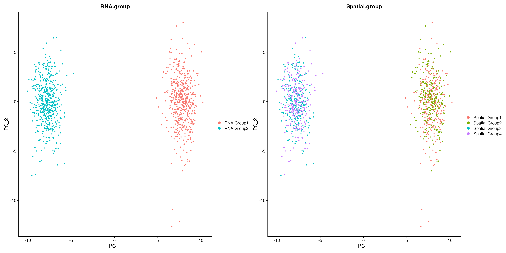
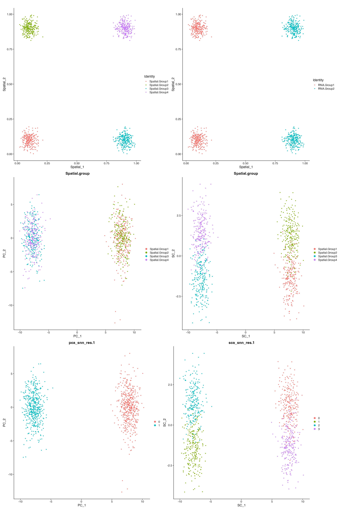
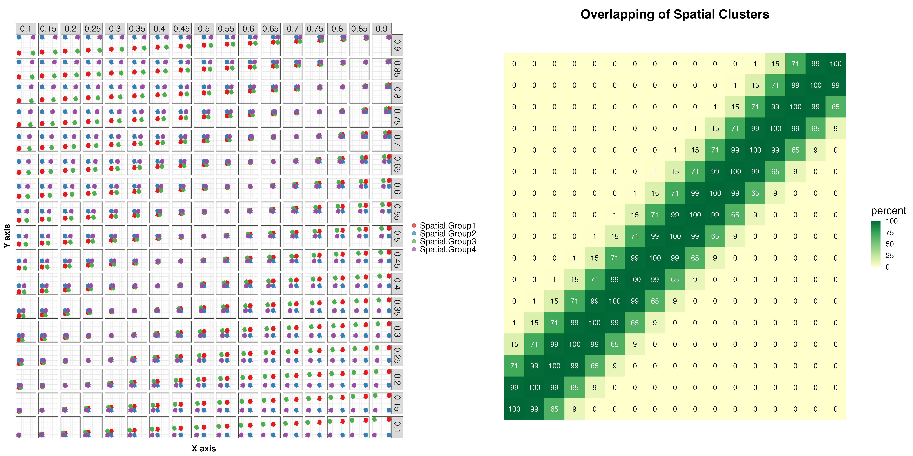
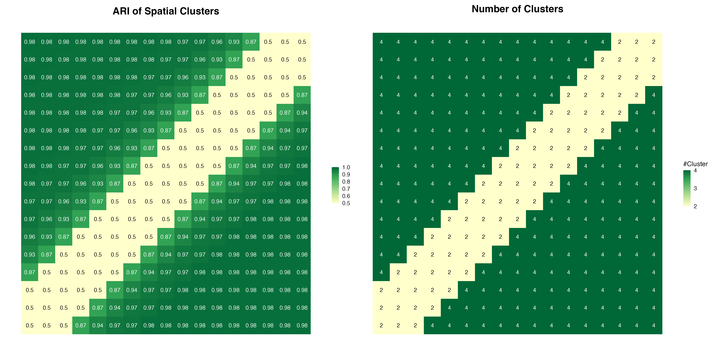

In this tutorial, we will examine the spatial influences on cluster (cell-type) discovery, and how we can incorporate the location information to achieve a spatially-aware dimensional reduction.
For this tutorial, we will simulate 1000 single-cell RNA-seq data using splatter. There are two transcriptionally distinct clusters namely RNA.Group1 and RNA.Group2, and within each cluster, there are two spatially distinct types (Spatial.Group1,Spatial.Group2 and Spatial.Group3,Spatial.Group4). As expected, canonical Principal Component Analysis (PCA) cannot reveal this spatial information.
# install dependencies
if (!require("BiocManager", quietly = TRUE))
install.packages("BiocManager")
if (!requireNamespace("scater", quietly = TRUE))
BiocManager::install("scater")
if (!requireNamespace("splatter", quietly = TRUE))
BiocManager::install("splatter")
if (!requireNamespace("Seurat", quietly = TRUE) | utils::packageVersion("Seurat") < "4.0.0")
remotes::install_version("Seurat", version = "4.0.0")
if (!require("spots", quietly = TRUE))
install.packages("spots")
library(splatter)
library(scater)
library(Seurat)
library(spots)
sim.groups <- splatSimulate(group.prob = c(0.5, 0.5), method = "groups",
verbose = FALSE, batchCells = 1100, nGenes = 5000,seed=123)
sim.data <- CreateSeuratObject(counts(sim.groups)[,c(which(sim.groups$Group == "Group1")[1:500],
which(sim.groups$Group == "Group2")[1:500])])
sim.data$RNA.group <- factor(rep(c("RNA.Group1","RNA.Group2"),each=500))
sim.data <- SetIdent(sim.data, value = "RNA.group")
sim.data$Spatial.group <- factor(rep(c("Spatial.Group1", "Spatial.Group2",
"Spatial.Group3", "Spatial.Group4"), each = 250))
sim.data <- NormalizeData(sim.data, verbose = FALSE)
sim.data <- FindVariableFeatures(sim.data, verbose = FALSE)
sim.data <- ScaleData(sim.data, verbose = FALSE)
sim.data <- RunPCA(sim.data, verbose = FALSE)
PCAPlot(sim.data, group.by = "RNA.group") + PCAPlot(sim.data, group.by = "Spatial.group")
Here, we simulated the X-Y coordinates for the four spatially distinct groups. We then use the X-Y coordinates as input and performed the Spatial Component Analysis (SCA) using the SCA function from spots.
We can see that while PCA ignores spatial information, SCA preserves the spatial structure within the data. And subsequent clustering analysis using Spatial Components is able to recapitulate all four spatially distinct groups.
set.seed(123)
group1 <- rnorm(250,0.1,0.035)
group2 <- rnorm(250,0.9,0.035)
group3 <- rnorm(250,0.1,0.035)
group4 <- rnorm(250,0.9,0.035)
sim.data$Spatial_1 <- c(group1, group1, group2, group2)
sim.data$Spatial_2 <- c(group3, group4, group3, group4)
W <- as.matrix(1/dist(sim.data@meta.data[,c("Spatial_1","Spatial_2")])^2)
W <- log(W+1)
diag(W) <- 0
X <- t(as.matrix(sim.data@assays$RNA@data[VariableFeatures(sim.data),]))
temp <- SCA(X, W, n.eigen = 20)
sim.data@reductions[["sca"]] <- CreateDimReducObject(embeddings = temp$X,
loadings = temp$rotation,
stdev = temp$eigenvalues,
assay = "RNA",key="SC_")
sim.data <- FindNeighbors(sim.data, reduction = "sca",
k.param = 100, dims = 1:10,
graph.name = c("sca_nn", "sca_snn"), verbose = F)
sim.data <- FindClusters(sim.data, graph.name = "sca_snn", resolution = 1, verbose = F)
sim.data <- FindNeighbors(sim.data, reduction = "pca",
k.param = 100, dims = 1:10,
graph.name = c("pca_nn", "pca_snn"), verbose = F)
sim.data <- FindClusters(sim.data, graph.name = "pca_snn", resolution = 1, verbose = F)
(FeatureScatter(sim.data, "Spatial_1", "Spatial_2", group.by = "Spatial.group") + ggtitle("") +
FeatureScatter(sim.data, "Spatial_1", "Spatial_2", group.by = "RNA.group") + ggtitle("")) /
(DimPlot(sim.data, reduction = "pca", group.by = "Spatial.group") +
DimPlot(sim.data, reduction = "sca", group.by = "Spatial.group")) /
(DimPlot(sim.data, reduction = "pca", group.by = "pca_snn_res.1") +
DimPlot(sim.data, reduction = "sca", group.by = "sca_snn_res.1"))
We now simulate a set of different spatial coordinates on the X-Y plane, in total 17 X-axis * 17 Y-axis = 289 distinct locations for the four spatial clusters
As we can see, when the X-Y coordinates get too close, the four spatial clusters start to overlap and are not distinguishable.
if (!require("RColorBrewer", quietly = TRUE))
install.packages("RColorBrewer")
if (!require("cowplot", quietly = TRUE))
install.packages("cowplot")
library(RColorBrewer)
ari.param <- expand.grid(seq(0.1,0.9,0.05),seq(0.1,0.9,0.05))
ari.scatter <- c()
for(i in 1:nrow(ari.param)){
set.seed(123)
group1 <- rnorm(250,as.numeric(as.character(ari.param[i,1])),0.035)
group2 <- rnorm(250,as.numeric(as.character(ari.param[i,2])),0.035)
group3 <- rnorm(250,as.numeric(as.character(ari.param[i,1])),0.035)
group4 <- rnorm(250,as.numeric(as.character(ari.param[i,2])),0.035)
sim.data$Spatial_1 <- c(group1, group1, group2, group2)
sim.data$Spatial_2 <- c(group3, group4, group3, group4)
ari.scatter <- rbind(ari.scatter,
cbind(sim.data@meta.data[,c('Spatial_1',"Spatial_2","RNA.group","Spatial.group")],
X = ari.param[i,1], Y = ari.param[i,2]))
}
ari.scatter$Y <- factor(ari.scatter$Y,levels = rev(unique(ari.scatter$Y)))
p1 <- ggplot(ari.scatter, aes(Spatial_1,Spatial_2,col=Spatial.group)) +
geom_point(size=1) + scale_fill_manual(values = alpha(brewer.pal(4,"Set1"),0.7), aesthetics = "colour") +
facet_grid(Y~X,scales = "fix") +
theme_bw() + xlab("X axis") + ylab("Y axis") +
theme(axis.title=element_text(face="bold"),
strip.text = element_text(size=20),
axis.text.y = element_text(size=0),
axis.title.y = element_text(size=20,vjust = 1.5),
axis.title.x = element_text(size=20,vjust = -1),
legend.text = element_text(size=20),
axis.text.x = element_text(size=0,angle = 90),
axis.ticks = element_blank(),
legend.title = element_blank()) +
guides(color = guide_legend(override.aes = list(size=4)))
ncell = c()
for(i in 1:nrow(ari.param)){
set.seed(123)
group1 <- rnorm(250,as.numeric(as.character(ari.param[i,1])),0.035)
group2 <- rnorm(250,as.numeric(as.character(ari.param[i,2])),0.035)
group3 <- rnorm(250,as.numeric(as.character(ari.param[i,1])),0.035)
group4 <- rnorm(250,as.numeric(as.character(ari.param[i,2])),0.035)
sim.data$Spatial_1 <- c(group1, group1, group2, group2)
sim.data$Spatial_2 <- c(group3, group4, group3, group4)
r1 <- range(sim.data$Spatial_1[1:250])
r2 <- range(sim.data$Spatial_2[1:250])
cells <- names(which(sim.data$Spatial_1[251:1000] >= r1[1]
& sim.data$Spatial_1[251:1000] <= r1[2]
& sim.data$Spatial_2[251:1000] >= r2[1]
& sim.data$Spatial_2[251:1000] <= r2[2]))
r1 <- range(sim.data$Spatial_1[251:500])
r2 <- range(sim.data$Spatial_2[251:500])
cells <- c(cells, names(which(sim.data$Spatial_1[-c(251:500)] >= r1[1]
& sim.data$Spatial_1[-c(251:500)] <= r1[2]
& sim.data$Spatial_2[-c(251:500)] >= r2[1]
& sim.data$Spatial_2[-c(251:500)] <= r2[2])))
r1 <- range(sim.data$Spatial_1[501:750])
r2 <- range(sim.data$Spatial_2[501:750])
cells <- c(cells, names(which(sim.data$Spatial_1[-c(501:750)] >= r1[1]
& sim.data$Spatial_1[-c(501:750)] <= r1[2]
& sim.data$Spatial_2[-c(501:750)] >= r2[1]
& sim.data$Spatial_2[-c(501:750)] <= r2[2])))
r1 <- range(sim.data$Spatial_1[751:1000])
r2 <- range(sim.data$Spatial_2[751:1000])
cells <- c(cells, names(which(sim.data$Spatial_1[1:750] >= r1[1]
& sim.data$Spatial_1[1:750] <= r1[2]
& sim.data$Spatial_2[1:750] >= r2[1]
& sim.data$Spatial_2[1:750] <= r2[2])))
cells <- unique(cells)
ncell <- c(ncell, length(cells)/1000)
}
ari.param$percent <- ncell*100
p2 <- ggplot(data = ari.param, mapping = aes(Var1,Var2,fill = percent)) + geom_tile() +
scale_fill_gradientn(colors = brewer.pal(5,"YlGn")) +
geom_text(data = ari.param[ari.param$percent>50,], mapping = aes(Var1,Var2),
label=round(ari.param[ari.param$percent>50,"percent"],0),
size=6,col="white", inherit.aes = F) +
geom_text(data = ari.param[ari.param$percent<=50,], mapping = aes(Var1,Var2),
label=round(ari.param[ari.param$percent<=50,"percent"],0),
size=6,col="black", inherit.aes = F) + ggtitle("Overlapping of Spatial Clusters") +
cowplot::theme_cowplot(font_size = 20) + NoAxes() +
theme(plot.title = element_text(size = 30,hjust = 0.5, vjust = 0),
legend.title = element_text(size=25))
p1 + p2
We perform Spatial Component Analysis using the SCA function for all the 289 simulations. To evaluate the performance of SCA and the clustering results, we calculated the number of clusters and Adjusted Rand Index
if (!require("mclust", quietly = TRUE))
install.packages("mclust")
ari <- c()
nclust <- c()
clustering <- c()
for(i in 1:nrow(ari.param)){
print(i)
set.seed(123)
group1 <- rnorm(250,as.numeric(as.character(ari.param[i,1])),0.035)
group2 <- rnorm(250,as.numeric(as.character(ari.param[i,2])),0.035)
group3 <- rnorm(250,as.numeric(as.character(ari.param[i,1])),0.035)
group4 <- rnorm(250,as.numeric(as.character(ari.param[i,2])),0.035)
sim.data$Spatial_1 <- c(group1, group1, group2, group2)
sim.data$Spatial_2 <- c(group3, group4, group3, group4)
W <- as.matrix(1/dist(sim.data@meta.data[,c("Spatial_1","Spatial_2")])^2)
W <- log(W+1)
diag(W) <- 0
X <- t(as.matrix(sim.data@assays$RNA@data[VariableFeatures(sim.data),]))
temp <- SCA(X, W, n.eigen = 20)
sim.data@reductions[["sca"]] <- CreateDimReducObject(embeddings = temp$X,
loadings = temp$rotation,
stdev = temp$eigenvalues,
assay = "RNA",key="SC_")
sim.data <- FindNeighbors(sim.data, reduction = "sca",
k.param = 100, dims = 1:10,
graph.name = c("sca_nn", "sca_snn"), verbose = F)
sim.data <- FindClusters(sim.data, graph.name = "sca_snn", resolution = 1, verbose = F)
clustering <- cbind(clustering, sim.data$sca_snn_res.1)
nclust <- c(nclust, length(levels(sim.data$sca_snn_res.1)))
ari <- c(ari, mclust::adjustedRandIndex(sim.data$sca_snn_res.1, sim.data$Spatial.group))
}
ari.param$ari.spatial <- ari
ari.param$nclust <- nclust
colnames(ari.param)[3:4] <- c("ARI Spatial",'#Cluster')
saveRDS(ari.param, file = "ari.param.bench.rds")
saveRDS(clustering, file = "sca.clustering.rds")We see that SCA can distinguish the four distinct clusters as long as they are spatially separated. When the locations of the four groups overlapped, the spatial pattern starts to get lost, and only the two groups are revealed, which are distinguished by non-spatial features.
So far we've focused on simulated data. However, for real-world data such as 10x Visium spatial-omics, SCA can identify features that exhibit spatial trends and clusters that are spatially organized. Please see this tutorial for details.
ari.param <- readRDS(file = "ari.param.bench.rds")
p1 <- ggplot(data = ari.param, mapping = aes(Var1,Var2,fill = `ARI Spatial`)) + geom_tile() +
scale_fill_gradientn(colors = brewer.pal(5,"YlGn"), breaks=seq(0.5,1,0.1),limits=c(0.499,1)) +
geom_text(data = ari.param[ari.param$`ARI Spatial`>0.5,], mapping = aes(Var1,Var2),
label=round(ari.param[ari.param$`ARI Spatial`>0.5,"ARI Spatial"],2),
size=6,col="white", inherit.aes = F) +
geom_text(data = ari.param[ari.param$`ARI Spatial`<=0.5,], mapping = aes(Var1,Var2),
label=round(ari.param[ari.param$`ARI Spatial`<=0.5,"ARI Spatial"],2),
size=6,col="black", inherit.aes = F) + ggtitle("ARI of Spatial Clusters") +
cowplot::theme_cowplot(font_size = 20) + NoAxes() +
theme(plot.title = element_text(size = 30,hjust = 0.5, vjust = 0), legend.title = element_blank())
p2 <- ggplot(data = ari.param, mapping = aes(Var1,Var2,fill = `#Cluster`)) + geom_tile() +
scale_fill_gradientn(colors = brewer.pal(5,"YlGn"), breaks = seq(2,4,1)) +
geom_text(data = ari.param[ari.param$`#Cluster`>2,], mapping = aes(Var1,Var2),
label=ari.param[ari.param$`#Cluster`>2,"#Cluster"],
size=6,col="white", inherit.aes = F) +
geom_text(data = ari.param[ari.param$`#Cluster`<=2,], mapping = aes(Var1,Var2),
label=ari.param[ari.param$`#Cluster`<=2,"#Cluster"],
size=6,col="black", inherit.aes = F) + ggtitle("Number of Clusters") +
cowplot::theme_cowplot(font_size = 20) + NoAxes() +
theme(plot.title = element_text(size = 30,hjust = 0.5, vjust = ))
p1 + p2
print(sessionInfo())
## R version 4.0.3 (2020-10-10)
## Platform: x86_64-apple-darwin17.0 (64-bit)
## Running under: macOS Big Sur 10.16
##
## Matrix products: default
## BLAS: /Library/Frameworks/R.framework/Versions/4.0/Resources/lib/libRblas.dylib
## LAPACK: /Library/Frameworks/R.framework/Versions/4.0/Resources/lib/libRlapack.dylib
##
## locale:
## [1] en_US.UTF-8/en_US.UTF-8/en_US.UTF-8/C/en_US.UTF-8/en_US.UTF-8
##
## attached base packages:
## [1] parallel stats4 stats graphics grDevices utils datasets methods base
##
## other attached packages:
## [1] cowplot_1.1.1 RColorBrewer_1.1-2 SeuratObject_4.0.0 Seurat_4.0.1 scater_1.18.3
## [6] ggplot2_3.3.3 splatter_1.14.1 SingleCellExperiment_1.12.0 SummarizedExperiment_1.20.0 Biobase_2.50.0
## [11] GenomicRanges_1.42.0 GenomeInfoDb_1.26.2 IRanges_2.24.1 S4Vectors_0.28.1 BiocGenerics_0.36.0
## [16] MatrixGenerics_1.2.0 matrixStats_0.57.0 spots_0.1.0 BiocManager_1.30.10
##
## loaded via a namespace (and not attached):
## [1] backports_1.2.1 systemfonts_0.3.2 plyr_1.8.6 igraph_1.2.6 lazyeval_0.2.2
## [6] splines_4.0.3 BiocParallel_1.24.1 listenv_0.8.0 scattermore_0.7 digest_0.6.27
## [11] htmltools_0.5.2 viridis_0.5.1 magrittr_2.0.1 checkmate_2.0.0 memoise_2.0.1
## [16] tensor_1.5 cluster_2.1.0 ROCR_1.0-11 globals_0.14.0 spatstat.sparse_2.0-0
## [21] pkgdown_2.0.2 colorspace_2.0-0 ggrepel_0.9.0 textshaping_0.2.1 xfun_0.30
## [26] dplyr_1.0.2 crayon_1.3.4 RCurl_1.98-1.2 jsonlite_1.7.2 spatstat.data_1.7-0
## [31] survival_3.2-7 zoo_1.8-8 glue_1.6.2 polyclip_1.10-0 gtable_0.3.0
## [36] zlibbioc_1.36.0 XVector_0.30.0 leiden_0.3.6 DelayedArray_0.16.0 BiocSingular_1.6.0
## [41] future.apply_1.7.0 abind_1.4-5 scales_1.1.1 DBI_1.1.0 miniUI_0.1.1.1
## [46] Rcpp_1.0.7 viridisLite_0.3.0 xtable_1.8-4 reticulate_1.18 spatstat.core_1.65-5
## [51] rsvd_1.0.3 htmlwidgets_1.5.3 httr_1.4.2 ellipsis_0.3.2 ica_1.0-2
## [56] farver_2.0.3 pkgconfig_2.0.3 scuttle_1.0.4 uwot_0.1.10 deldir_0.2-3
## [61] sass_0.4.0 locfit_1.5-9.4 labeling_0.4.2 tidyselect_1.1.0 rlang_1.0.2
## [66] reshape2_1.4.4 later_1.1.0.1 munsell_0.5.0 tools_4.0.3 cachem_1.0.1
## [71] cli_3.2.0 generics_0.1.0 ggridges_0.5.3 evaluate_0.15 stringr_1.4.0
## [76] fastmap_1.1.0 goftest_1.2-2 yaml_2.2.1 ragg_0.4.0 knitr_1.38
## [81] fs_1.5.0 fitdistrplus_1.1-3 purrr_0.3.4 RANN_2.6.1 nlme_3.1-151
## [86] pbapply_1.4-3 future_1.21.0 sparseMatrixStats_1.2.0 mime_0.9 compiler_4.0.3
## [91] rstudioapi_0.13 beeswarm_0.2.3 plotly_4.9.2.2 png_0.1-7 spatstat.utils_2.1-0
## [96] tibble_3.0.4 bslib_0.3.1 stringi_1.5.3 highr_0.8 RSpectra_0.16-0
## [101] desc_1.4.1 lattice_0.20-41 Matrix_1.3-2 vctrs_0.4.1 pillar_1.4.7
## [106] lifecycle_1.0.1 spatstat.geom_1.65-5 lmtest_0.9-38 jquerylib_0.1.3 RcppAnnoy_0.0.18
## [111] BiocNeighbors_1.8.2 data.table_1.13.6 bitops_1.0-6 irlba_2.3.3 httpuv_1.5.4
## [116] patchwork_1.1.1 R6_2.5.0 promises_1.1.1 KernSmooth_2.23-18 gridExtra_2.3
## [121] vipor_0.4.5 parallelly_1.23.0 codetools_0.2-18 MASS_7.3-53 rprojroot_2.0.2
## [126] withr_2.4.3 sctransform_0.3.2 GenomeInfoDbData_1.2.4 mgcv_1.8-33 rpart_4.1-15
## [131] grid_4.0.3 beachmat_2.6.4 tidyr_1.1.2 rmarkdown_2.13 DelayedMatrixStats_1.12.1
## [136] Rtsne_0.15 shiny_1.5.0 ggbeeswarm_0.6.0